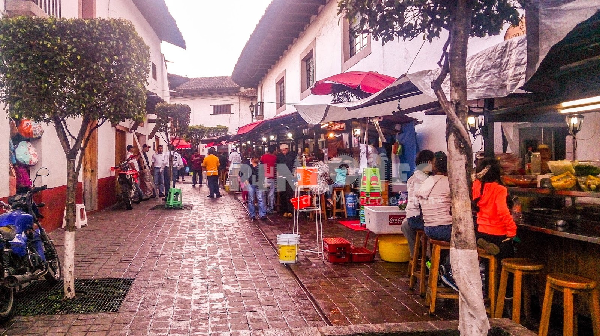

Está en el centro, en El Arco 100, a un ladito del Jardín Central y de la iglesia de San Francisco.Es un callejón angosto lleno de puestos de comida. No es un solo local, son muchos puestitos juntos.
Venden:
Tacos de cecina, suadero, pastor, longaniza y tripa, quesadillas, gorditas, esquites, elotes y postres.
Es importante:
Porque es un lugar muy tradicional de Valle, donde la gente va a comer rico y barato. Abre todos los días de 10 de la mañana a 2 de la madrugada.
